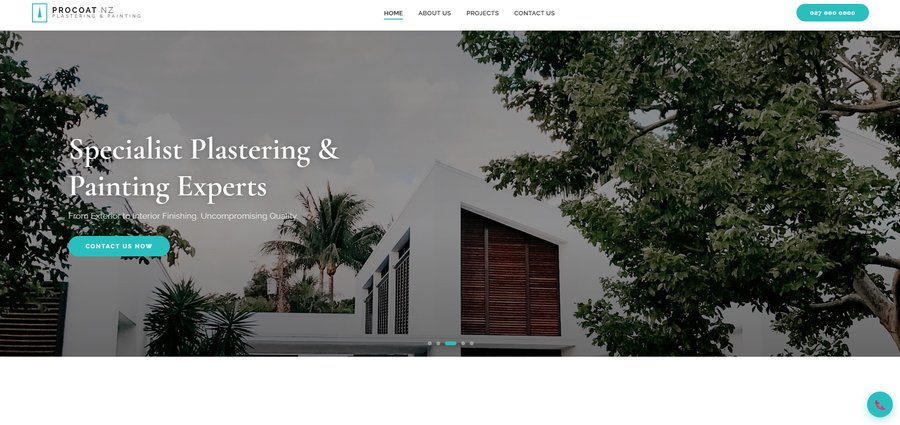

Nelson Web Co is me, Blake. I'm a local website designer, and I build websites for Nelson businesses, from tradies who need their phone ringing to shops that want to sell online.
Whether you're starting from nothing or replacing a site that isn't pulling its weight, I'll build something that suits your business and works properly on a phone. We start with a chat about what you need, I put together a Scope of Work with a fixed price, and you see the site taking shape before it goes live.
You deal with one person in Nelson from the first chat to the day your site goes live, and after. I work with businesses across Nelson, Tasman and the rest of New Zealand.

Custom websites
Every site is built from scratch around your business, not dropped into a template. It loads quickly, looks like you, and does what you need it to.
Websites for tradies
Job photos, licences, a call button that works and your trade set up for Google. Everything someone needs to choose you and ring you. See what's included
Wording and photos
Not sure what to say? I'll write the words for your site. No photos yet? I'll use good free stock photos to start with and swap in your own when you have them.
Logos
Need a logo? I can design a simple one or arrange one through a designer, so your website, van and business cards all match.
Domain names
If you don't have a web address yet, I'll help you pick one and set it up in your business's name, so it's always yours. Already have one? I'll connect it.
Business email
An address like you@yourbusiness.co.nz looks a lot more professional than a Gmail. I can set it up through Google Workspace or Microsoft Outlook.
Ready to talk about your website?
Tell me a bit about your business and what you need. I'll get back to you within 24 hours.